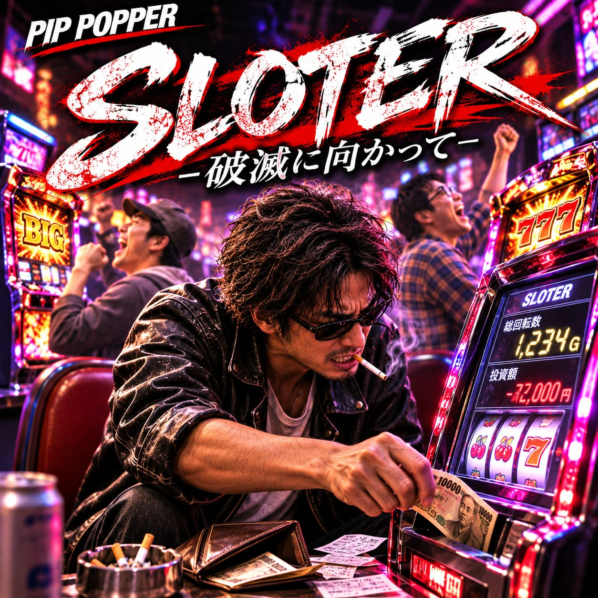

SLOTER -破滅に向かって-

04
SLOTER -破滅に向かって-
PIP POPPER
AI ImpressionAIの感想
週末も平日の休みもスロットに吸い込まれていく男たちを、自虐とユーモアたっぷりに描いたスロッターの賛歌。リールの緊張、ビッグ確定の高揚、「あと千円」という悪魔の囁き、コンビニでのキャッシングまで、ホールの空気がリアルな言葉で次々と押し寄せる。「真面目に働こう」と思った瞬間にボーナスが確定する皮肉や、「もう行かない当分 多分」という弱い決意には思わず笑ってしまう。一方で、金を増やそうとして金に使われる「金の奴隷」の姿や、金銭感覚が麻痺していく空間への視線は鋭く、副題の「破滅に向かって」が冗談では済まない重さを帯びる。「懲りないスロッター」と開き直るサビの勢いの裏に、抜け出せない人間の哀愁がにじむ一曲。
Lyrics
パチンコ通いの週末負けが続いて苛立つ 空き台待つ新台並んで突進だ金が尽きてまた死んだ
タバコで席取りメダルを手に取りみんなの手垢がベットリスリーコイン ベットインポケットにある万札くずしまたエントリー
開店早々 千回転そんな展開にイカリ頂点真面目に働こう 働こうと思ったとこでボーナス確定
第一リール 第二リール緊張の第三リールでビッグ確定となりは確率変動中俺は続けるか辞めるか検討中
Yeah!We are SLOTER 懲りないスロッター今週もみんなやはりここに揃ったあ行くぜー！今日こそ取り返してやるぜ！取り返してやるぜ！
たまの平日の休日昼間っからスロット満喫 本日「ヴィーナス」イベント開催中そんな中 はまってる真っ最中
急に見えなくなった 消えた万札返しやがれ！ ボケナス ヴィーナス俺を呼んでいる秘宝伝の方で旗に書いてある「解放デイ」
もうすでに持ち金ナッシング！近くのコンビニでキャッシング見抜けた設定 出るぜぜってぇ思い込んでつぎ込む大抵の奴が
悪魔の囁き「あと千円」しかし飲み込まれる to the 永遠金持ちとは無縁終わった後に価値に気付く一万円
そんな休日 過ごす社会人自由人 結局みんな暇人この不況がそうさせるのか？金銭感覚 麻痺する空間金銭感覚 麻痺する空間
最初は暇つぶしのつもりがイカリで握るこぶしエムシーの仕事も無視してハマって結局 持ち金吹っ飛ぶし
潰されてるのは暇じゃなく自分もう行かない当分 多分忘れられないスリーセブンまたおろす定期預金全部
この不況がみんなをそうさせる誰かが俺を裏で操作する金を増やそうと、する奴が 金を使っているはずが
使われている 金のもう奴隷そろそろ正気に戻れ金たまんねぇ だがとまんねぇ取り返せねぇ俺のマネー
Yeah!We are SLOTER 懲りないスロッター今週もみんなやはりここに揃ったあ行くぜー！今日こそ取り返してやるぜ！取り返してやるぜ！
Yeah!We are SLOTER 懲りないスロッター今週もみんなやはりここに揃ったあ行くぜー！今日こそ取り返してやるぜ！取り返してやるぜ！